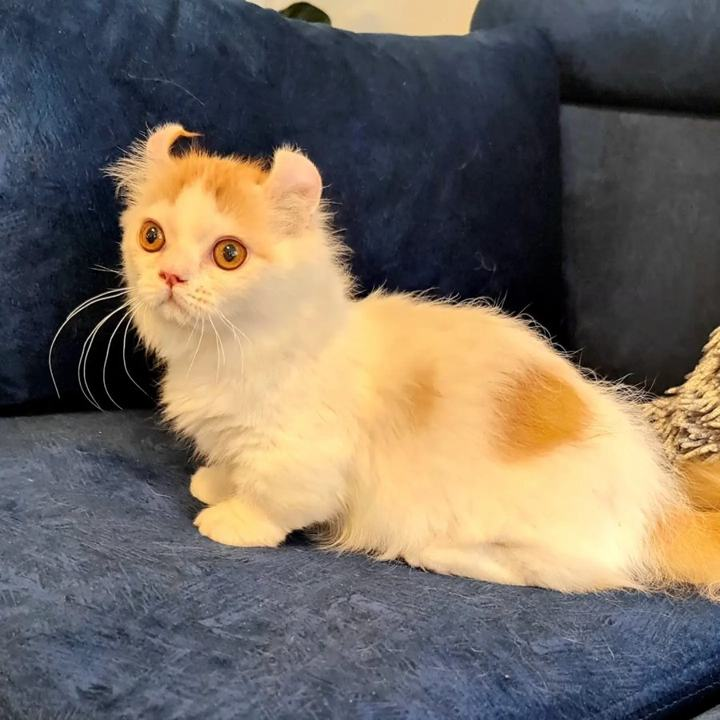

Gato Kinkalow en Medellín y Colombia
El Kinkalow es una de las razas más raras: patas cortas y orejas que se curvan hacia atrás. Esta guía explica cómo es y qué conviene preguntar antes de decidir.

Fotografía de uno de nuestros gatitos.
¿Qué es el Kinkalow?
El Kinkalow es una raza poco común que combina el rasgo de patas cortas del Munchkin con las orejas curvadas hacia atrás del American Curl.
- Rasgo único
- Orejas curvadas hacia atrás y patas cortas
- Carácter (según nuestra experiencia)
- Tierno, amoroso, tranquilo y muy apegado a su familia
- Cuidados
- Limpieza suave de orejas y cepillado semanal
Cuidados
Las orejas curvadas piden una limpieza suave y revisión periódica. El pelaje se cuida con cepillado semanal. Como todo gato de interior, necesita juego y compañía.
Salud: lo que debes saber
Combina el rasgo de patas cortas, con los cuidados que ello implica, y el de orejas curvas. Por ser una raza rara, hay poca información científica específica. Pide datos de salud concretos de cada gatito, incluida la revisión de orejas, y consulta a un veterinario de confianza antes de reservar.
Qué preguntar antes de reservar
- Qué información de salud existe del gatito y de sus padres.
- Qué vacunas y desparasitación tiene y qué revisión veterinaria se le hizo.
- Qué cubre exactamente la garantía y si consta por escrito.
- Qué documento de raza se entrega y quién lo emite.
Precio y proceso de adquisición
Los gatos enanos tienen un valor de referencia de entre $3.500.000 y $6.500.000 pesos colombianos, según la raza, el gatito y su línea genética. El valor final te lo confirmamos por WhatsApp o llamada. Entregamos en Colombia y orientamos los trámites de envío al exterior. Ver cómo adquirir tu gatito.
Preguntar por Kinkalow en WhatsApp